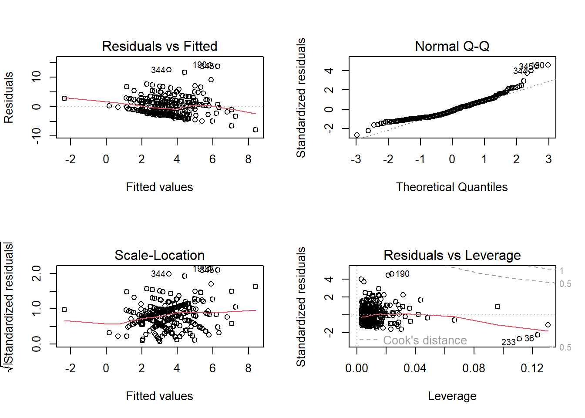

See Canvas for the due date. Complete all of the following problems. Ideally, the theoretical problems should be answered in a Markdown cell directly underneath the question. If you don’t know LaTex/Markdown, you may submit separate handwritten solutions to the theoretical problems. Please do not turn in messy work. Computational problems should be completed in this notebook (using the R kernel is preferred). Computational questions may require code, plots, analysis, interpretation, etc. Working in small groups is allowed, but it is important that you make an effort to master the material and hand in your own work.
A. Theoretical Problems
A.1 Deriving the t-statistic
In this question, we’ll walk through the proof that the t-test statistic has a t-distribution. More specifically, consider the simple linear regression model \(Y_i = \beta_0 + \beta_1x_i + \varepsilon_i\), where \(\varepsilon_i \overset{iid}{\sim} N(0,\sigma^2)\), \(x_i\) are fixed and known, \(\sigma^2\), \(\beta_0\) and \(\beta_1\) are fixed and unknown, and \(i=1,...,n\). We estimate \(\beta_0\) and \(\beta_1\) using least squares, and denote the least squares estimators \(\widehat\beta_0\) and \(\widehat\beta_1\).
Consider testing the hypotheses \(H_0: \beta_1 = 0 \,\,\, vs \,\,\, H_1: \beta_1 \ne 0\). In class, we claimed that the appropriate test statistics is
\[
\begin{align*}
t = \frac{\widehat\beta_1}{\widehat{s.e.}(\widehat\beta_1)},
\end{align*} \]
where, for simple linear regression, \[\widehat{s.e.}(\widehat\beta_1) = \sqrt{\frac{\widehat{\sigma}^2}{\sum^n_{i=1}\left(x_i - \bar{x}\right)^2}} \,\,\,\, , \text{ and } \,\,\,\,\, \,\, \widehat{\sigma}^2 = \frac{RSS}{(n - 2)}.\]
Further, we claimed that \(t \sim t\left(n - 2 \right)\). That is, the test statistic \(t\) has a t-distribution with \(n-2\) degrees of freedom. Let’s prove it in a few steps!
A.1 (a) [4 points] Recall that\(\displaystyle\widehat\beta_1 \sim N\left(\beta_1, \,\, \frac{\sigma^2}{\sum^n_{i=1}\left(x_i - \bar{x}\right)^2} \right)\). Argue that \(\displaystyle Z = \frac{\widehat\beta_1}{\sqrt{\frac{\sigma^2}{\sum^n_{i=1}\left(x_i - \bar{x}\right)^2}}}\) has a standard normal distribution under \(H_0\). (This should be easy!)
YOUR ANSWER HERE
For shorthand, let \(\mu_{y_i|x_i} = \beta_0 + \beta_1x_i\).
A.1 (b) (i). [5 points] First, show that\(\displaystyle \frac{\sum^n_{i=1}\left(y_i - \mu_{y_i|x_i}\right)^2}{\sigma^2} \sim \chi^2(n)\). This should follow straight from the definition of the \(\chi^2(n)\) distribution given in class, along with some easy algebra!
YOUR ANSWER HERE
A.1 (b) (ii). [8 points] Now, show that\(\displaystyle \frac{\sum^n_{i=1}\left(y_i - \mu_{y_i|x_i}\right)^2}{\sigma^2} = \frac{\sum^n_{i=1}\left(y_i - \widehat{y}_i\right)^2}{\sigma^2} + \frac{\sum^n_{i=1}\left(\widehat{y}_i - \mu_{y_i|x_i}\right)^2}{\sigma^2}\). (HINT: add and subtract \(\widehat{y}_i\) to the lefthand side.)
Note that the middle term \(\frac{\sum^n_{i=1}\left(y_i - \widehat{y}_i\right)^2}{\sigma^2}\) can be written as \(\frac{RSS}{\sigma^2}\), or equivalently, \(\frac{(n-2)\widehat\sigma^2}{\sigma^2}.\)
YOUR ANSWER HERE
Ok, so maybe we won’t do the entire proof. Note, without having to prove it, that \(\displaystyle\frac{(n-2)\widehat\sigma^2}{\sigma^2} \sim \chi^2(n-2)\). This is because
which follows from some facts about the \(\chi^2\) distribution involving moment generating functions. Math Stat students, you should know how to prove this :)
With \(\displaystyle\frac{(n-2)\widehat\sigma^2}{\sigma^2} \sim \chi^2(n-2)\) in hand, let’s finish the proof that our test statistic for individual t-tests follows a t distribution with \(n-2\) degrees of freedom.
By definition, a random variable \(T\) has a t-distribution with \(d\) degrees of freedom if it can be written as
\[T = \frac{Z}{\sqrt{W\big/d}},\]
where \(Z \sim N(0,1)\) and \(W \sim \chi^2(d)\).
A.1 (c) [8 points] Prove that\(t = \frac{\widehat\beta_1}{\widehat{s.e.}(\widehat\beta_1)}\) can be written in the form of a t-distributed random variable with \(n-2\) degrees of freedom. Specifically, let \(Z\) be defined as in problem A.1 (a), and \(W = \frac{(n-2)\widehat\sigma^2}{\sigma^2}\). Show that
\[
\begin{align*}
\frac{Z}{\sqrt{W\big/(n-2)}} = \frac{\widehat\beta_1}{\widehat{s.e.}(\widehat\beta_1)} = t ,
\end{align*} \]
which, by definition, means that \(t \sim t(n-2)\).
YOUR ANSWER HERE
Problem A.2
Over the next few classes, we will be discussing the use of regression–and statistical modeling more generally–for prediction and explanation. The purpose of this problem is to encourage you to gain a deeper understanding of prediction, explanation, and the relationship between these two concepts.
[10 points] Read “To Explain or to Predict?” by Galit Shmueli and answer at least three of the following questions. Each answer should be typed in a markdown cell in this notebook, and roughly one paragraph (5-10 sentences) in length. The goal of this assignment is to provide the opportunity to think more rigorously about some of the statistical models that we will encounter in this course. What is their purpose? How can we get the most out of our statistical analysis?
What is explanatory modeling? Where is explanatory modeling most often used? What does explanatory modeling have to do with causality?
What is predictive modeling? Where is predictive modeling most often used? What does predictive modeling have to do with causality?
How are explanation and prediction different? Is it universally recognized that they are different?
Describe how, according to Shmueli, the statistical modeling procedure might change based on whether the goal of the modeling is explanation or prediction.
What are some suggestions that Shmueli gives to the statistical community based on his analysis of prediction and explanation? Do you agree with these suggestions?
(If you did this as your “classwork #0” assignment, then, lucky you! Review and past your answers here.)
YOUR ANSWER HERE
1. What is explanatory modeling? Where is explanatory modeling most often used? What does explanatory modeling have to do with causality?
Shmueli specifically defines explanatory modeling as the use of statistical models to test causal hypotheses about theoretical “constructs.” Where “constructs” are abstractions that can be observable or non-observable (i.e. not measureable variables). Shmueli finds that explanatory modeling is often used in the field of “Information Systems (IS)”, which seems like mostly the social sciences. Some examples of the theoretical constructs that are used in the causal hypotheses include things like trust, perceived usefulness, perceived ease of use, etc. The relation of explanatory modeling with causality is regarding the step in process where causal hypotheses are connected to the “statistical conclusions” led by the statistical inferences. And how these “statistical conclusions” are then made into “research conclusions.”
2. What is predictive modeling? Where is predictive modeling most often used? What does predictive modeling have to do with causality?
Then, Shmueli defines predictive modeling exactly as it sounds, the process of using statistical models (or data mining algorithms) to predict (produce) new or future observations. (i.e. Given some input X, what are the new predicted outputs (Y)?) Predictive modeling has relation to causality because there is some underlying implication that the inputs (predictors) have some influence on the output, which could imply some association with causality (but may not be definitive).
3. How are explanation and prediction different? Is it universally recognized that they are different?
The nature of uncertainty associated with each are different (thus their difference is relevant). I can’t say I know if it’s necessarily universally known that they are different. From my own experience I think without the explicit mention of this topic/discussion I probably would’ve used both terms fairly interchangeably. And the article by Shmueli describes that the “debate” was brought up in the philosophical sciences to determine if they are the same, but was found a bit later that they have natures that are different.
A.3 More linear algebra and regression!
In class, we defined the hat or projection matrix as
\[H = X(X^TX)^{-1}X^T.\]
The goal of this question is to use the hat matrix to prove that the fitted values, \(\widehat{\mathbf Y}\), and the residuals, \(\widehat{\boldsymbol\varepsilon}\), are uncorrelated. We will do it in steps, and some of the proofs will only be required for STAT 5010 students. Note that STAT 4010 students are asked to answer part (e), as to why this result has practical importance.
A.3 (a) [5 points] Show that\(\widehat{Y} = HY\). That is, \(H\) “puts a hat on” \(Y\).
YOUR ANSWER HERE
\(y = \beta X + \varepsilon\)
We can start with our \(\hat{\beta}_{OLS}\). (There’s a proof that this is an unbiased estimate of \(\beta\) in our lecture notes, but because we’ve already had a quiz on it and it’s not asked for in this question I’m not going to explicitly write it out.)
\[\hat{\beta}_{OLS} = (X^\top X)^{-1} X^\top Y \] And we have \(\widehat{Y} = X \hat{\beta}_{OLS}\).So then,
\[\begin{equation}
\widehat{Y} = X \hat{\beta}_{OLS} \\
= X \underbrace{[(X^\top X)^{-1} X^\top Y]}_{\hat{\beta}_{OLS}} \\
= \underbrace{X(X^\top X)^{-1} X^\top}_H Y \\
\Rightarrow \widehat{Y} = HY
\end{equation}\]
A.3 (b) [5 points] Show that\(H\) is symmetric: \(H = H^T\).
YOUR ANSWER HERE
(If \(A^2 = A\) then matrix \(A\) is symmetric (I think)).
(\(I\) is the identity matrix (and any matrix multiplied with the identity matrix is itself).)
A.3 (c) [4 points] Show that\(H(I_n - H) = 0_n\), where \(0_n\) is the zero matrix of size \(n \times n\).
YOUR ANSWER HERE
\[H(I_n - H) = HI_n - HH\]
And from the previous question (A.3(b)) we know that \(HH = H\). Thus,
\[\begin{equation}
\Rightarrow H(I_n - H) = \underbrace{HI_n}_H - \underbrace{HH}_H \\
= H - H \\
= 0_n \\
\end{equation}\]
A.3 (d) [4 points] Stating that\(\widehat{\mathbf Y}\) is uncorrelated with \(\widehat{\boldsymbol\varepsilon}\) is equivalent to showing that these vectors are orthogonal. That is, we need to show that their dot product is zero:
\[ \widehat{\mathbf Y}^T\widehat{\boldsymbol\varepsilon} = 0.\]Prove this result.
It’s interesting to think about why uncorrelated, in this case, is equivalent to orthogonal. Extra credit if you can tell me why!
YOUR ANSWER HERE
Some helpful equations
\[\begin{equation}
\widehat{Y} = HY \\
\widehat{\varepsilon}_i = (y_i - \hat{y}_i) \Rightarrow \widehat{\boldsymbol\varepsilon} = Y - \widehat{Y}
\end{equation}\]
Extra credit answer: Orthogonality between vectors implies there is no correlation, because orthogonal vectors are linearly independent. In other words, orthogonal vectors can not use a sum of or dot product of them to recreate the other.
A.3 (e) [2 points] Why is this result important in the practical use of linear regression?
A.4 (b) [4 points] Let\(H\) be the hat matrix as defined in class. Prove that \(tr(H) = p+1\), where \(p\) is the number of parameters in the regression.
YOUR ANSWER HERE
The matrix \(X\) is an \(m \times n\) matrix, where (the number of columns of \(X\)) \(n\) is equal to \(p+1\) (\(n=p+1\)).
And the \(m\times n\) matrix \(X\) is a full-rank matrix (proved in previous HWs), which means \(rank(X)= n\). Thus the identity matrix \(I\) is an \(n \times n\) matrix.
In this exercise, we will fit multiple different models to the same data and determine which of those models we should ultimately use.
This data set has \(345\) rows and \(7\) columns, where the 7th column is not a variable but just a train/test selector. The dataset does not contain any variable representing presence or absence of a liver disorder.
Drinks: Number of half-pint equivalents of alcoholic beverages drunk per day
The first five columns are integer-valued and represent the result of various blood tests which may be of use in diagnosing alcohol-related liver disorders. The sixth column is real-valued and represents the number of alcoholic drinks (equivalent to half pints of beer) taken per day by the subject, self reported.
Mcv Alkphos Sgpt Sgot
Min. : 65.00 Min. : 23.00 Min. : 4.00 Min. : 5.00
1st Qu.: 87.00 1st Qu.: 57.00 1st Qu.: 19.00 1st Qu.:19.00
Median : 90.00 Median : 67.00 Median : 26.00 Median :23.00
Mean : 90.16 Mean : 69.87 Mean : 30.41 Mean :24.64
3rd Qu.: 93.00 3rd Qu.: 80.00 3rd Qu.: 34.00 3rd Qu.:27.00
Max. :103.00 Max. :138.00 Max. :155.00 Max. :82.00
Gammagt Drinks
Min. : 5.00 Min. : 0.000
1st Qu.: 15.00 1st Qu.: 0.500
Median : 25.00 Median : 3.000
Mean : 38.28 Mean : 3.455
3rd Qu.: 46.00 3rd Qu.: 6.000
Max. :297.00 Max. :20.000
B.1 (a) [6 points] Three Different Models
We will fit three different models to this data:
mod.1: Fits Drinks as the response with Mcv as the predictor.
mod.2: Fits Drinks as the response with Mcv and Alkphos as predictors.
mod.3: Fits Drinks as the response with Mcv, Alkphos and Sgpt as predictors.
Fit these models in the cell below.
#YOUR CODE HERElibrary(ISLR)mod.1<-lm(Drinks ~ Mcv, data = liver)mod.2<-lm(Drinks ~ Mcv + Alkphos, data = liver)mod.3<-lm(Drinks ~ Mcv + Alkphos + Sgpt, data = liver)
B.1 (b) [3 points] Partial F-Tests
Compare the 3 models using pairwise F-tests to determine which of the three we should use moving forward. It may be helpful to write out the null and alternative hypotheses for these tests.
Copy your selected model into the final.model variable.
final.model =NA#YOUR CODE HERE
anova(mod.1,mod.2)
Analysis of Variance Table
Model 1: Drinks ~ Mcv
Model 2: Drinks ~ Mcv + Alkphos
Res.Df RSS Df Sum of Sq F Pr(>F)
1 343 3457.9
2 342 3428.8 1 29.069 2.8995 0.08952 .
---
Signif. codes: 0 '***' 0.001 '**' 0.01 '*' 0.05 '.' 0.1 ' ' 1
anova(mod.1,mod.3)
Analysis of Variance Table
Model 1: Drinks ~ Mcv
Model 2: Drinks ~ Mcv + Alkphos + Sgpt
Res.Df RSS Df Sum of Sq F Pr(>F)
1 343 3457.9
2 341 3334.7 2 123.17 6.2977 0.002062 **
---
Signif. codes: 0 '***' 0.001 '**' 0.01 '*' 0.05 '.' 0.1 ' ' 1
anova(mod.2,mod.3)
Analysis of Variance Table
Model 1: Drinks ~ Mcv + Alkphos
Model 2: Drinks ~ Mcv + Alkphos + Sgpt
Res.Df RSS Df Sum of Sq F Pr(>F)
1 342 3428.8
2 341 3334.7 1 94.103 9.6228 0.002082 **
---
Signif. codes: 0 '***' 0.001 '**' 0.01 '*' 0.05 '.' 0.1 ' ' 1
Using your selected best model, calculate a \(95\%\) confidence interval for the parameter associated with the Mcv predictor (you can use the confint() function). Save the lower and upper values into Mcv.CI.lower and Mcv.CI.upper respectively.
So far, we’ve used the F-test as a way to choose a “best” model among the three proposed. Now let’s compare the models according to their mean squared errors (MSE). The MSE is defined as
Compute the MSE for each of the three models and save their values into their respective MSE.# variables.
Which of these models has the best MSE? Do these conclusions agree with the model you selected in part 1.b? Think about why or why not.
MSE.1=NAMSE.2=NAMSE.3=NA#YOUR CODE HERE# finding the mse is the same as taking the mean of the residuals (and the "summary" function gives us the residuals)# mse of mod.1(MSE.1 =mean(summary(mod.1)$residuals^2))
[1] 10.02276
# mse of mod.2(MSE.2 =mean(summary(mod.2)$residuals^2))
[1] 9.938497
# mse of mod.3(MSE.3 =mean(summary(mod.3)$residuals^2))
[1] 9.665735
YOUR ANSWER HERE
mod.3 has the lowest, thus the best, MSE. (Then mod.2 and then mod.1 in that order.) This does match the conclusion from B.1(b) (fortunately), because the conclusion from that question was that the other two parameters in addition to Msv held more significance and thus could potentially perform the better than the other two models. And since mod.3 had the lowest MSE (i.e. lowest error) it supports that conclusion.
B.1 (e) This model violates at least one of our regression assumptions. Which one? Produce a plot to show evidence of this violation.
par(mfrow =c(2,2))plot(mod.3)

YOUR ANSWER HERE
The residual vs. fitted plot shows that the model fails the homoscedasticity assumption (finite variance and expected value of 0 for residuals).
Problem B.2
Consider the teengamb data. Fit a model with gamble as the response and income as the predictor.
B.2 (a) [2 points] Load the dataset and explore it graphically and numerically. Are there relationships between variables?
The link provided above explains the columns as such:
sex
0 = male
1 = female
status
Socioeconomic status score based on parents’ occupation
income
in pounds per week
verbal
verbal score in words out of 12 correctly defined
gamble
expenditure on gambling in pounds per year
There from the pair plot and correlation matrix, there’s only a few correlations (relationships) that have some notable significance. income and gamble seem to have the highest correlation out of all of the variables (which is kinda funny) with a positive correlation of \(0.62\). I think the benchmark for “significant” correlation may have been \(\pm0.6\) (also depending on the field), but the next highest one is the relationship between status and verbal. The rest of the variables don’t have all that much significant relationship with each other.
B.2 (b) [3 points] Randomly split the dataset into two parts:
50% of the data stored in the variable train. This will be the data that we fit/train our model on.
the remaining 50% of the data stored in the variable test. We will use this data to test our predictions.
set.seed(1985) #don't change the seed!#YOUR CODE HEREn =floor(0.5*nrow(df)) # find the number corresponding to 80% of the data.index =sample(seq_len(nrow(df)),size=n) # randomly assigning indices to be included in the training settrain = df[index,] # set the training set to be the randomly sampled rows of the dataframetest = df[-index, ] # set the testing set to be the remaining rowscat("There are", dim(train)[1], "rows and", dim(train)[2], "columns in training set.\n") # check the dimensions
There are 23 rows and 5 columns in training set.
cat("There are", dim(test)[1], "rows and", dim(test)[2], "columns in testing set.") # check the dimensions
There are 24 rows and 5 columns in testing set.
B.2 (c) [2 points] Conduct simple linear regression, using the lm_gamble = lm() function and your training set, train, with gamlbe as the response, and income as the predictor.
#YOUR CODE HERElm_gamble <-lm(gamble ~ income, data = train)summary(lm_gamble)
Call:
lm(formula = gamble ~ income, data = train)
Residuals:
Min 1Q Median 3Q Max
-29.385 -8.506 -5.722 8.299 55.224
Coefficients:
Estimate Std. Error t value Pr(>|t|)
(Intercept) 1.539 6.532 0.236 0.8160
income 2.942 1.142 2.577 0.0176 *
---
Signif. codes: 0 '***' 0.001 '**' 0.01 '*' 0.05 '.' 0.1 ' ' 1
Residual standard error: 19.72 on 21 degrees of freedom
Multiple R-squared: 0.2402, Adjusted R-squared: 0.204
F-statistic: 6.64 on 1 and 21 DF, p-value: 0.01759
B.2 (d) [8 points] We learned that, often, the goal of regression is to make predictions on new data. Let’s see how well the model does at predicting values that we left out of the training set.
We can get a sense of how well the model does at predicting by computing the mean squared prediction error (MSPE):
\(y^\star_i\) is the \(i^{th}\) response value in the test set.
\(\mathbf{x}_i^\star = \left(1,x_{i,1}^\star, x_{i,2}^\star,...,x_{i,p}^\star \right)\) is the \(i^{th}\) set of predictors (and a 1 for the intercept multiplication…) in the test set. Notice that it’s a row vector.
\(\widehat{\boldsymbol\beta}\) is the least squares estimate of \(\boldsymbol\beta\), fit on the training set, train.
B.2 (e) [4 points] The mean squared error (MSE) is similar to the MSPE, but it uses the training data instead of the test data. Compute the MSE on your train data.
Now let’s perform multiple linear regression using the dataset from Problem B.2
B.3 (a) [3 points] Perform MLR, using your training set, using gamble as the response and all other variables as predictors. Store your lm() object in mlr_gamble.
#YOUR CODE HEREcolnames(train)
[1] "sex" "status" "income" "verbal" "gamble"
mlr_gamble <-lm(gamble ~ . , data = train) # "." represents 'the rest of the columns' I believesummary(mlr_gamble)
Call:
lm(formula = gamble ~ ., data = train)
Residuals:
Min 1Q Median 3Q Max
-33.289 -9.757 -0.366 4.850 47.351
Coefficients:
Estimate Std. Error t value Pr(>|t|)
(Intercept) 6.5475 19.6722 0.333 0.7431
sex -16.8618 11.3995 -1.479 0.1564
status 0.1519 0.3916 0.388 0.7027
income 2.9988 1.1238 2.669 0.0157 *
verbal -0.8320 2.7808 -0.299 0.7682
---
Signif. codes: 0 '***' 0.001 '**' 0.01 '*' 0.05 '.' 0.1 ' ' 1
Residual standard error: 18.18 on 18 degrees of freedom
Multiple R-squared: 0.4465, Adjusted R-squared: 0.3235
F-statistic: 3.63 on 4 and 18 DF, p-value: 0.02448
B.3 (b) [13 points] Compute the MSE for the data in the training set (store in mse_train), and for data in the testing set (store in mse_test). Which one is lower? Explain why you think it’s lower.
The MSE of the training set is much lower than the MSE for the testing set. I can’t say I know why it is so much lower, but it probably makes sense that the MSE for a training set would be lower in general because the error is what the model is trying to minimize (optimization problem).
B.3 (c) [4 points] Compute the hat matrix for this regression, and then compute its trace (sum of the diagonals). Store your answer in pp1. Comment on the value of the trace (hint, refer to other problems in this homework!).
To compute the trace quickly, you can use the tr() function in the psych package. You’ll probably need to install the package in Anaconda.
Jasmine’s note to self:
t() computes transpose of matrix
solve() computes inverse of matrix
%*% is matrix multiplication
hat matrix = \(X(X^\top X)^{-1}X^\top\) = X %*% solve(t(X)X) %*% t(X)
#YOUR CODE HERElibrary(psych)# "design matrix" XX <-model.matrix(mlr_gamble)# hat matrixhat_mat <- X %*%solve(t(X) %*% X) %*%t(X)# trace of hat matrixpp1 <-tr(hat_mat)cat("trace of hat matrix =", pp1)
trace of hat matrix = 5
YOUR ANSWER HERE
And expected from question A.4(b) the trace of the hat matrix (\(tr(H)\)) is equal to \(p+1\), in other words, the number of predictors plus 1.
(In our case, \(p=4\) and we got \(tr(H) = 5 = p + 1\))